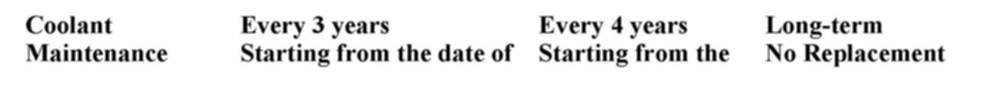
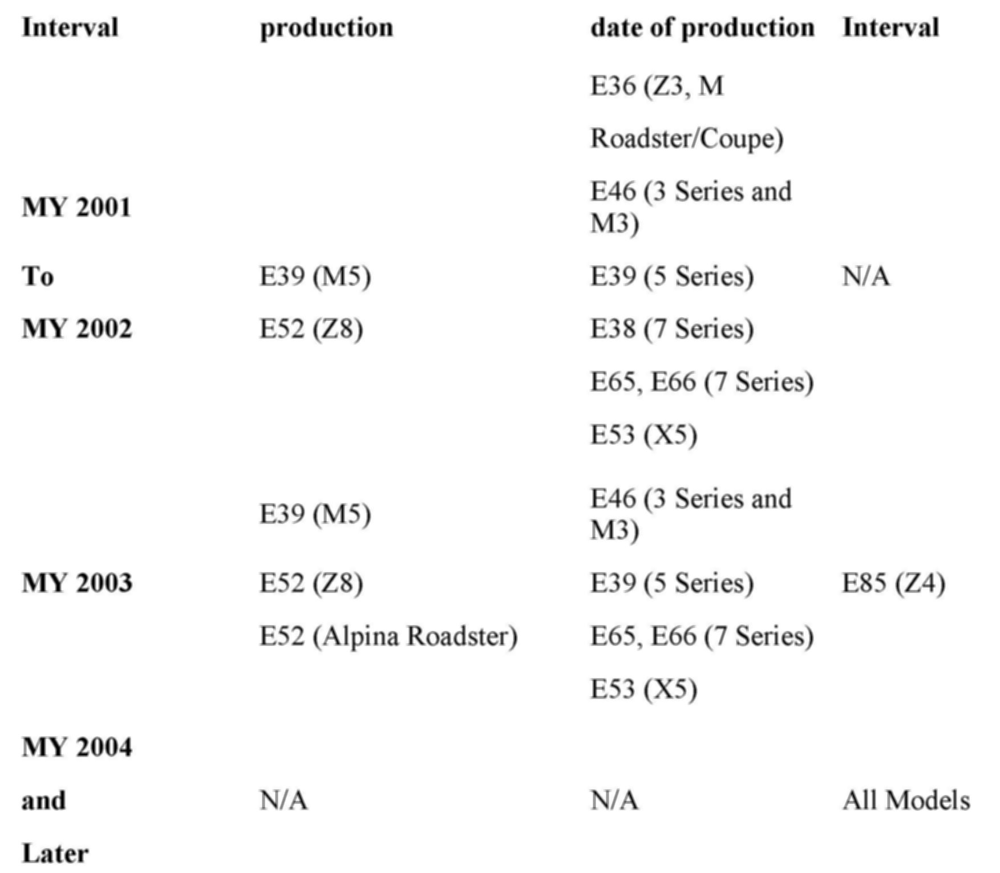

Cooling System - Long Term Coolant Service Information
SI B 17 01 07Cooling Systems
June 2010
Technical Service
This Service Information bulletin supersedes SI B17 01 07 dated October 2007.
[NEW] designates changes to this revision
SUBJECT
BMW Long-term Antifreeze/Coolant: Maintenance, Repairs, and Replacement Requirements
MODEL
2003 E85 (Z4)
2004 and newer, all models
INFORMATION
The cooling systems for the BMW vehicles listed above must only be filled with a long-term ethylene glycol antifreeze/coolant solution containing corrosion inhibitors that are compatible with aluminum components.
Engine Antifreeze/Coolants for BMW vehicles have four basic functions:
^ Help provide sufficient cooling;
^ Help provide the cooling system with protection against winter freeze-ups and summer boilovers;
^ Protect various metals (gray cast iron, steel, aluminum alloys, brass, copper, and solder) against corrosion; and
^ Prevent excessive silicate gel precipitation, which may cause clogging of the cooling system.
[NEW] Coolant System Repairs
In conjunction with any major repairs where aluminum or metal cooling system components are replaced (e.g., radiator, cylinder head), drain and completely replace the long-term antifreeze/coolant. These components require corrosion protection that is only available with new long-term antifreeze/coolant.
For all other repairs involving the draining of partial quantities of coolant (e.g., thermostat replacement), replenish those drained quantities with new long-term antifreeze/coolant. It is important, in order to maintain corrosion protection, not to reuse any drained coolant. Always recycle or properly dispose of used engine coolant.
Initial Filling at the Factory and Refilling
The antifreeze concentration of the coolant installed at the factory is valid for all areas of the U.S. and Canadian markets. This should be checked before the beginning of each winter for sufficient protection against freezing. An antifreeze tester is required to correctly determine the level of antifreeze concentration.
[NEW] Refer to SI B17 01 06 and SI B17 01 10 (or REP 17 00 039) for more details on refilling the coolant system.
Diluted or Contaminated Long-term Antifreeze/Coolant
The corrosion inhibitors of long-term and short-term antifreeze/coolants do not work together, so it is not advisable to mix the two products. Topping off a long-term antifreeze/coolant solution with a short-term antifreeze/coolant solution dilutes the level of corrosion protection. In an emergency situation, when long-term antifreeze is not available, top off with water until a long-term antifreeze/coolant is obtained. Since adding water will dilute the level of antifreeze protection, always remember to check and adjust the antifreeze concentration as necessary after such situations.
The color of BMW Long-term Antifreeze/Coolant is blue; however, the colors of other locally available long and short-term coolants vary. These colors include green, orange, pink, red, or yellow. Mixing BMW Long-term Antifreeze/Coolant with these different colors and types of antifreeze/coolants can result in a discolored solution in the cooling system. If a discolored antifreeze/coolant solution is found in the cooling system, determine the cause, repair the vehicle as needed, and, if necessary, replace the antifreeze/coolant completely to ensure adequate corrosion protection.
BMW Long-term Antifreeze/Coolant Chemistry
Long-term antifreeze/coolants utilize Organic Acid Technology (OAT). OAT-type antifreeze/coolant solutions use organic acid salts in place of the inorganic corrosion inhibitor additives found in traditional short-term antifreeze/coolants. OAT-type corrosion inhibitors are slower-acting, last longer, and provide excellent long-term corrosion protection for various coolant system aluminum and metal components, along with no required change interval.
BMW's Long-term Antifreeze/Coolant (82 14 1 467 704) is a Hybrid OAT (HOAT) solution, since it also has added silicates to provide quick-acting protection for aluminum surfaces. Silicates help repair surface erosion caused by cavitation in the water pump.
BMW's Long-term Antifreeze/Coolant does not contain nitrites or phosphates and has been formulated to prevent excessive silicate gel precipitation, significantly reducing the possibility of harmful deposit formation.
BMW Antifreeze/Coolant Maintenance Summary
BMW's Long-term Antifreeze/Coolant can be used for all model years; however, its use does not eliminate or supercede a stated change interval. Always maintain the antifreeze/coolant in accordance with the cooling system maintenance requirements outlined in the corresponding vehicle's Service and Warranty Information Booklet.


The summary above details the BMW conversion, by model year (MY) and model, to a long-term antifreeze/coolant solution.
WARRANTY INFORMATION
Covered under the terms of the BMW New Vehicle Limited Warranty or the BMW Maintenance Programs.